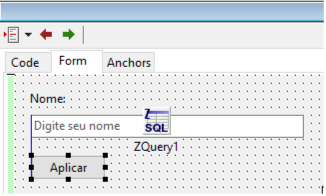
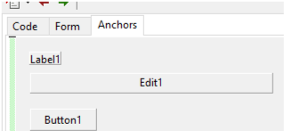

A extensão abaixo é para quem já está acostumado ao jeito Delphi-like onde o editor de formulários fica exatamente onde está o editor de código e com mestria usar a tecla F12 e ficar alternando entre um e o outro. Instale o seguinte pacote:
O dockedformeditor é usado em conjunto com AnchorDocking e AnchorDockingDsgn, eles juntosfunciona harmoniosamente bem, muito diferente do sparta_dockedformeditor que é muito bugado. Com o dockedformeditor você terá o formulário docado na mesma área onde também fica o editor de código:

Um adcional a mais e a opção ‘Anchors’ que pode melhorar a exibição do formulário com ênfase nas posições e ancoramento:

ALERTA: Nunca use estes pacotes em conjunto com os pacotes Sparta que tem propósito similar até a versão 2.0 do Lazarus, como por exemplo o spartta_formeditor pois isso trará certas instabilidades, por exemplo, chamar a janela do ‘Fields Editor’ e ela ir para trás da IDE e você ficar procurando-o desajeitadamente. O pacote ‘sparta’ para essa finalidade de coagem foi descontinuado, o anchor docking é um fork dele que foi muito melhorado.
ALERTA #2: Parece que o dockedformeditor não está disponível no Lazarus 2.0, apenas a partir da 2.2